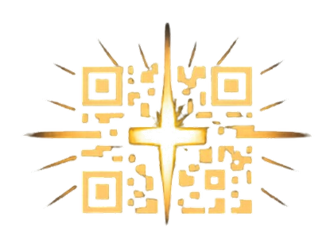

從一個入口開始
耳掛包上的 QR Code，不只是連到網頁，而是想讓人在撕開包裝、注水、等待香氣的幾分鐘裡，有一段剛好可以走進去的安靜時光。

撕開包裝，注入熱水。讓一杯咖啡，把心慢慢帶回來。
正在從雲端載入故事時光...
每杯咖啡都有它的回聲。在此處留下您的心情、故事或讀後感...
這一頁不是為了把故事包裝成什麼，而是想記下它怎麼開始。從一包耳掛咖啡、一個可以被掃進去的入口，到一段能被讀、被聽、被安靜接住的內容，這個地方是一步一步被整理出來的。
耳掛包上的 QR Code，不只是連到網頁，而是想讓人在撕開包裝、注水、等待香氣的幾分鐘裡，有一段剛好可以走進去的安靜時光。
每則故事被整理成封面、摘要、全文與媒體形式，於是一杯咖啡不只對應一段文字，也能慢慢長成可以被讀、被聽、被記住的內容。
故事不是寫死在頁面裡，而是從 Google Sheet 載入。這樣做不是為了炫技，而是為了讓更新、排序、改稿都能繼續發生，不必每一次都重新來過。
如果有一天，這樣的形式也能承接別人的故事、別的場域、別的陪伴方式，那它就不只是一個頁面，而是一種能被繼續傳遞的回應。
這裡想留下的，不是推介，也不是結論，而是起點。這件事不是因為準備好了才開始，而是因為心裡一直記得，有些人需要一段能慢下來的陪伴。
後來，方法才一點一點長出來：用什麼形式承接、怎麼讓內容能更新、怎麼讓一杯咖啡真的成為故事的入口。於是這個時光廊，才慢慢成形。